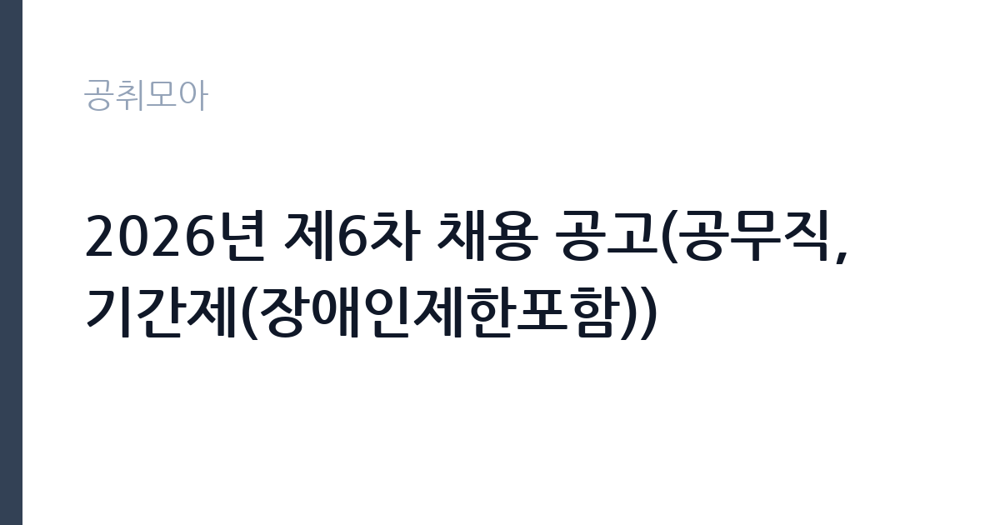

[공공기관] 2026년 제6차 채용 공고(공무직, 기간제(장애인제한포함))
한국여성인권진흥원 · 서울 · 마감 2026-10-30 (D-13) · 출처 나라일터

한눈에 보는 모집 조건
| 기관 | 한국여성인권진흥원 |
|---|---|
| 공고명 | 2026년 제6차 채용 공고(공무직, 기간제(장애인제한포함)) |
| 고용형태 | 공무직 |
| 근무지 | 서울 |
| 게시일 | 2026-10-16 |
| 마감일 | 2026-10-30 (D-13) |
지원자격, 이렇게 읽으세요
- 공무직 5명 기간제(장애인제한포함) 3명
- 접수 ~2026-10-30 마감
- 세부 조건은 원문 공고문 확인
공무직은 국가공무원법상 임용 결격사유가 없는 대한민국 국적자여야 하고, 분야별로 요구하는 자격이 따로 있습니다. 통합지원팀 1366중앙센터 자리는 교대 근무가 가능해야 하며, 야간 전담 자리도 포함되어 있습니다. 삭제지원팀은 디지털 성범죄 피해자 지원 업무 특성상 관련 자격이나 경력을 요구할 수 있습니다. 기간제 3명 가운데는 장애인 제한경쟁이 포함되어 있어 해당 여부를 확인해야 합니다.
이 공고의 포인트
여성긴급전화 1366 중앙센터는 24시간 상담 체계를 운영하기 때문에 3교대 근무가 필수입니다. 주간·저녁·야간 근무를 모두 소화할 수 있어야 하고, 야간 전담 자리는 별도로 모집합니다. 삭제지원팀은 디지털 성범죄 피해자의 게시물 삭제를 지원하는 업무로, 성인지 감수성과 절차 준수가 중요합니다. 공무직은 기간의 정함이 없어 장기 근무가 가능하다는 점이 이 공고의 가장 큰 장점입니다.
전형은 어떻게 진행되나
서류전형에서 모집인원의 5배수 이내를 선발하고, 면접전형은 자기소개와 질의응답 10분 내외로 진행됩니다. 서류와 면접 모두 평균 70점 이상이 합격 기준입니다. 이후 적격여부심사를 거쳐 최종합격자를 결정하며, 예비합격자는 채용인원의 2배수 이내에서 고득점 순으로 정해집니다. 합격 유효기간은 최종합격자 발표일로부터 6개월입니다.
원문에서 확인한 전형 방식
○ 채용 분야 - 공무직 - 기간제(장애인제한포함) ○ 채용 기간 - 공무직 : 채용일 ~ 기간의 정함이 없음 - 기간제(장애인제한포함) : 채용 공고문 참고 ○ 선발 방법 : 서류 / 면접 / 적격여부심사 - 응시 방법 : 온라인 지원(https://recruit.incruit.com/stop) ○ 담당부서(연락처) : 경영지원팀 02-6363-8323
이런 분께 추천해요
- 교대 근무를 감당하면서 상담·지원 업무를 이어가려는 지원자
- 디지털 성범죄 피해자 지원이나 사회복지 분야 경력자
- 장기 근무가 가능한 무기계약 공무직 자리를 찾는 사람
지원 전 체크리스트
- 3교대 및 야간 근무 가능 여부를 사전에 확인
- 기간제 3명 중 장애인 제한경쟁 해당 여부 확인
- 블라인드 채용 규정상 학교명·출신지·가족관계 기재 금지 항목 점검
- 임용 예정일이 12월 28일이라는 점을 일정에 반영
모집 일정과 제출 타이밍
접수는 2026년 10월 16일부터 10월 30일 오후 5시까지이며, 온라인 지원 사이트에서만 받습니다. 우편과 방문, 전자우편 접수는 불가능합니다. 서류전형 합격자는 11월 19일, 면접은 11월 26일부터 30일까지, 면접 합격자 발표는 12월 2일로 예고되어 있습니다. 적격여부심사를 거쳐 12월 14일 최종합격자가 발표되고, 12월 28일 임용됩니다.
직무 이해하기: 공공기관
1366 중앙센터 상담원은 전화와 문자, 온라인으로 들어오는 긴급 지원 요청을 접수하고 위기 상황을 분류합니다. 피해자에게 필요한 기관과 절차를 안내하고, 필요하면 경찰과 상담기관으로 연계합니다. 교대 근무조에 따라 주간·저녁·야간 업무를 나눠 맡고, 근무일지와 상담 기록을 남깁니다. 삭제지원팀은 피해자가 요청한 게시물의 삭제 절차를 진행하고 플랫폼과 소통하는 업무를 맡습니다.
자기소개서 작성 팁
자기소개서는 상담·지원 업무 경험과 성인지 감수성을 함께 보여주는 방향이 좋습니다. 위기 상황에 대응한 경험이 있다면 어떤 절차로 판단했고 어떤 기관과 연계했는지 구체적으로 쓰십시오. 교대 근무와 야간 근무를 감당할 수 있다는 점은 반드시 밝혀야 합니다. 블라인드 채용이므로 학교명이나 출신지, 가족관계는 쓰지 마십시오.
면접 준비 포인트
면접은 10분 내외의 자기소개와 질의응답으로 진행됩니다. 상황 대응 질문이 중심이므로, 긴급 전화를 받았을 때 가장 먼저 확인해야 할 정보가 무엇인지 정리해 두면 도움이 됩니다. 감정 노동이 큰 업무인 만큼 스트레스 관리 방식도 질문 대상입니다. 야간 근무조 편성에 동의할 수 있는지, 장기 근무 의사가 있는지도 확인됩니다.
급여·근무조건 읽는 법
공무직 보수는 진흥원 내부 기준에 따라 경력을 산정해 책정하며, 공고문에 연봉 하한 2,800만원과 상한 5,000만원이 제시되어 있습니다. 상세 경력 산정 방식에 따라 금액이 달라집니다. 수습기간은 3개월이고 수습 기간에도 보수는 100% 지급됩니다. 제수당은 진흥원 규정을 따르며, 세금과 4대보험을 공제한 금액이 실수령액입니다. 야간·교대 근무에 따른 수당 지급 여부는 근무 형태와 내부 규정을 함께 확인하십시오.
자주 묻는 질문
- 공무직은 정규직인가요?
기간의 정함이 없는 근로계약을 맺는 무기계약 공무직입니다. 수습 3개월 평가 후 정규 임용이 결정됩니다. - 야간 근무를 반드시 해야 하나요?
통합지원팀 1366중앙센터 자리는 3교대 운영이며 야간 전담 자리도 따로 모집합니다. 지원하는 분야의 근무 형태를 공고문에서 확인하십시오. - 연봉 2,800만원은 초임인가요?
하한액 기준이며 경력 산정 결과에 따라 상한 5,000만원까지 책정될 수 있습니다.
함께 보면 좋은 공고
[공공기관] 2026년도 제1차 직원(일반정규직, 실무직(보훈제한경쟁 포함), 조사직, 기간제 근로자, 체험형 청년인턴(장애인 제한경쟁채용 포함) 채용 공고 — 마감 2026-11-02[공공기관] 한국폴리텍대학 창원캠퍼스 행정지원직(사무직원 휴직 대체인력) 채용 공고 — 마감 2026-10-25[공공기관] 2026년도 제1차 직원(일반정규직, 실무직(보훈제한경쟁 포함), 조사직, 기간제 근로자, 체험형 청년인턴(장애인 제한경쟁채용 포함) 채용 공고 — 마감 2026-11-02출처: 나라일터 공개정보를 바탕으로 공취모아가 정리한 안내글입니다. 모집 조건·일정은 변경될 수 있으니 지원 전 반드시 원문 공고문을 확인하세요. 본 글은 정보 제공용이며 합격을 보장하지 않습니다.